Before an AI fines someone, it should weigh the evidence. तुला
India's new barrier-free tolls bill a car from a photo, with no barrier and no person checking. TULA sits between the camera and the bill. Meta SAM 3.1 finds the plate, two readers that never see each other's answer read it (one of them Meta Muse Glimmer 30B), and a conformal risk controller decides charge, hold or send to a human, so that wrong charges stay under a promise you can state, in fog and in clear light alike.

On 1,050 real plate photos
Photos and both readers' answers are real. FASTags and the registry are simulated, because no public data links them. Mean of 200 random splits, promise 5% per group.
How a passage is weighed
The two readers are kept blind to each other on purpose: agreement only counts as evidence if neither could copy the other.

Live lab: set the promise, watch the cut-offs move
This runs the real controller in your browser on real doubt scores: each group's calibration passages pick its own cut-off, then the held-out test passages show what that cut-off actually does. Nothing here is precomputed for a fixed promise.
"On average" means over many calibration sets: one split on its own can land a little above the promise, and the average over splits stays under it. "90% confidence" uses a Clopper-Pearson bound instead, so each split stays under the promise with probability at least 90%, at the cost of charging less.
Versus one confidence threshold
A single "charge when the model is this sure" rule cannot keep a promise per group: the same setting that is safe in fog is unsafe in clear light, because Muse Glimmer is careful in fog and over-confident when it can see. Move it and watch.
Results
Per group, against the 5% promise. Full tables in experiments/results.


Built on open Meta models
SAM 3.1
Text prompts "license plate" and "vehicle", running on a 16 GB MacBook through MLX. Found the plate in 247 of 248 foggy photos; the detector used before found 207.
Muse Glimmer 30B
Meta's official 4-bit GGUF in llama.cpp on two free Kaggle T4 GPUs. Reads plate, make, colour and type as JSON, and says "cannot read" in fog instead of guessing: 91% exact on clear photos, 37% in fog, against 71% and 15% for the open-source reader.
Open weights mean a toll operator can run all of it at the plaza, without sending photos of people's cars to a cloud API.
What this does not show
- FASTags, registry and attack mix are simulated. The photos and both readers' answers are real.
- The open-source reader is a stand-in. It is not the system any Indian toll operator uses.
- The readers fail on the same photos more often than chance, so the second reader adds less than independence would promise.
- A copied plate on a car of the same make and colour cannot be caught from one photo. It stays inside the attack bound, but catching it needs evidence across plazas.